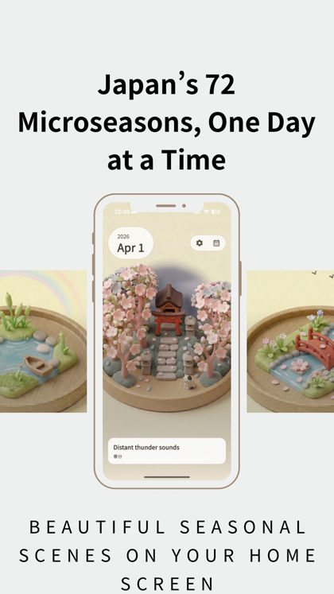
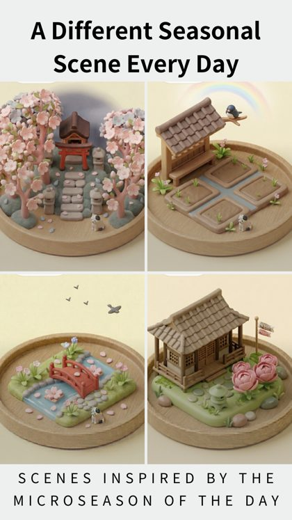
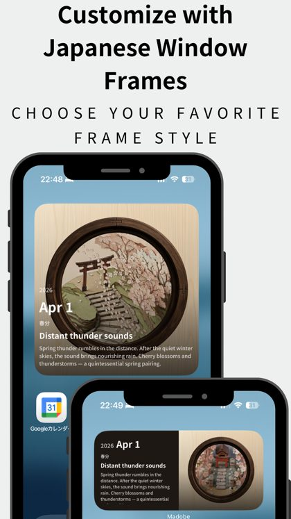
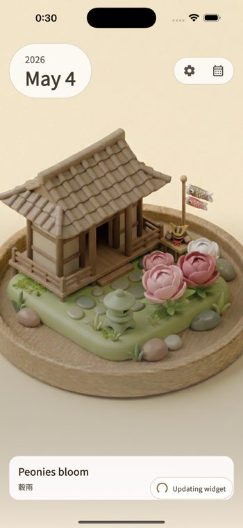

Madobe
A Japanese seasons widget for your home screen.
Madobe is a quiet daily iPhone widget inspired by Japan’s 72 microseasons — small seasonal shifts that change every few days. It is made for people who want a calm Japanese aesthetic without rebuilding every icon or installing a whole theme pack.

What it is
Madobe turns Japan’s small seasonal rhythm into miniature scenes for the iPhone home screen. It is meant to feel like a small window: calm, visual, and easy to keep nearby.
Who it is for
People who enjoy Japanese seasons, quiet widgets, miniature worlds, cozy phone setups, and subtle daily details.
If you searched for a Japanese aesthetic widget
Many Japanese home-screen pages focus on icon packs, wallpaper bundles, or full visual themes. Madobe takes a smaller route: one quiet daily widget, built around Japan’s 72 microseasons, for people who want their phone to feel calmer without rebuilding the whole setup.
Why this site exists
Small Japan Moments explains the culture, words, and seasonal feelings around Madobe. The app introduction should feel like a natural next step after reading, not an ad dropped into the page.
Screenshots
Small seasonal scenes, made for the home screen



Before you download
Is Madobe the kind of Japanese widget you are looking for?
If you searched for “Japanese aesthetic widget,” Madobe is the quiet seasonal direction: a daily home-screen widget, not an icon pack, wallpaper bundle, or full phone theme.
If you searched for “72 microseasons,” Madobe is a small daily way to notice that calendar rhythm on your iPhone, with miniature scenes that change with the season.
Try Madobe
Keep a tiny Japanese season nearby
The daily window is free, with optional Pro features for frames, themes, collections, wallpaper export, and an ad-free experience.
Download on the App Store